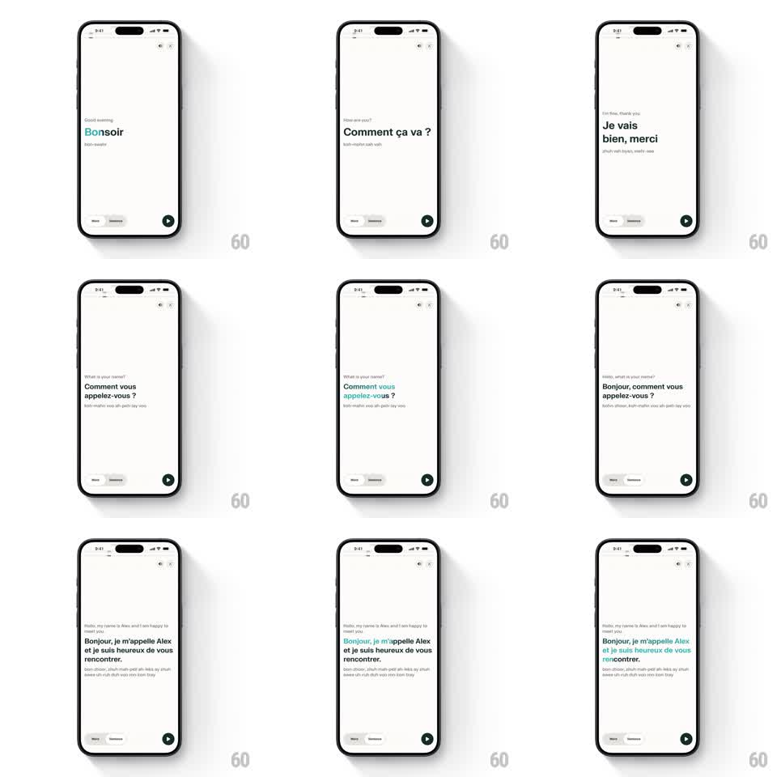

Media
Frame-by-frame

Rebuild this interaction 1:1: Perplexity's language conversation playback - sentences appear one at a time ("Bonjour", "Comment ca va?", "Je vais bien, merci") with phonetic subtitles, and as audio plays each word highlights in teal in sync while the play button state tracks playback.

Rebuild this interaction 1:1: Perplexity's language conversation playback - sentences appear one at a time ("Bonjour", "Comment ca va?", "Je vais bien, merci") with phonetic subtitles, and as audio plays each word highlights in teal in sync while the play button state tracks playback.
## Integration
Integration: stack-agnostic spec - springs given as stiffness/damping, timed motions as duration + curve; map every value to your framework and animation library of choice.
## Scene
Light off-white screen: close and speaker icons top-right, a vertical stream of conversation sentences - English gloss small and gray, the French sentence large and black, phonetic spelling in gray below ("bohn-zhoor"). Bottom bar: rewind/skip pill buttons and a round black play button.
## Motion spec
Pattern: audio-synced word highlighting, speech-paced.
- Reveal: each sentence block fades + rises in (300ms, ease-out) before its audio starts.
- Highlight: while audio plays, the current word fills teal and the spoken words behind it stay teal at full weight; upcoming words are gray (transition 120ms per word).
- Advance: on sentence end, a 400ms pause, then the next block reveals and plays.
- Transport: the play button morphs to pause on play (200ms icon crossfade); rewind jumps the highlight back to the sentence start (200ms).
## Calibration
- The highlight is per-word, not per-character, and lands on the exact spoken word.
- Phonetics never highlight - only the main sentence.
## Reduced motion
Words change color without timing animation; sentences appear without rise.
## Don't miss
- The teal highlight persists on already-spoken words within the sentence - it accumulates.
- The English gloss sits above the sentence, phonetics below, in that exact stack.